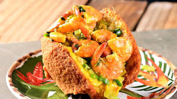
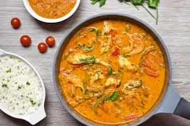
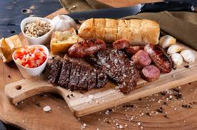
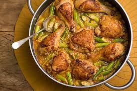

Sobre a culinária
A gastronomia brasileira é rica e diversa, com influências indígenas, africanas e europeias. Cada região do país possui pratos únicos que representam sua cultura.
Feijoada

Prato tradicional com feijão preto e carnes.
Acarajé

Comida típica da Bahia com camarão e dendê.
Pão de Queijo

Clássico mineiro leve e saboroso.
Moqueca

Prato de peixe com leite de coco e temperos brasileiros.
Churrasco

Muito popular no sul do Brasil, com carnes assadas na brasa.
Brigadeiro

Doce tradicional brasileiro feito com chocolate e leite condensado.
Baião de dois

Mistura nordestina de arroz, feijão, queijo coalho e carne-seca.
Brigadeiro

Prato mineiro composto por frango ensopado acompanhado de quiabo refogado.